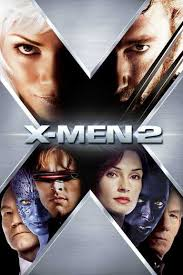
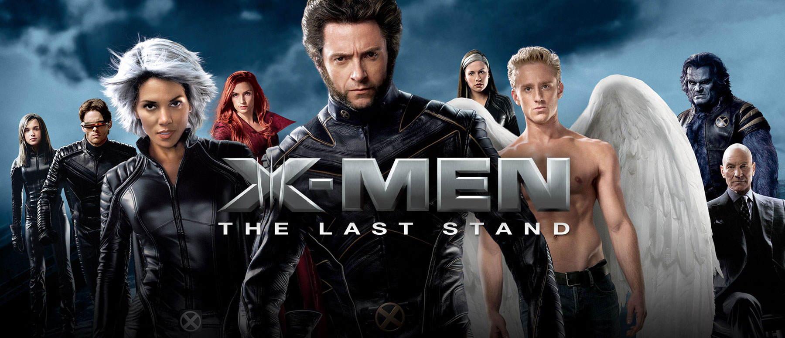
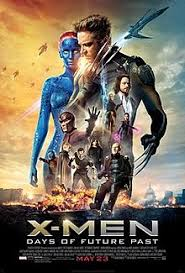

Wolverine (born James "Jimmy" Howlett), also known as Logan, was a mutant born with retractable forearm claws, enhanced physical parameters, and a powerful healing factor. The co-leader of the X-Men, he was also a famous hero and warrior being a veteran of multiple wars.
After leading the X-Men for many years and earning a legendary reputation, Logan became old and vulnerable due to poisoning of his admantium skeleton, resulting in his healing factor failing. With taking care of Charles Xavier with the help of Caliban, Logan found a "daughter" in X-23, causing Zander Rice and his men to pursue them, until they defeated them both including his own clone X-24, who murdered him gruesomely. Accepting his fate which he always wanted, Wolverine died in peace from his wounds with X-23 next to him.